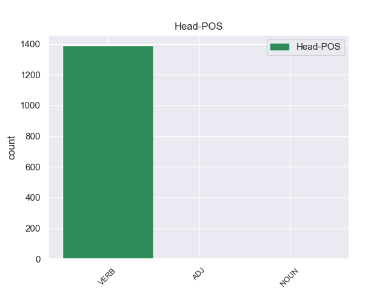
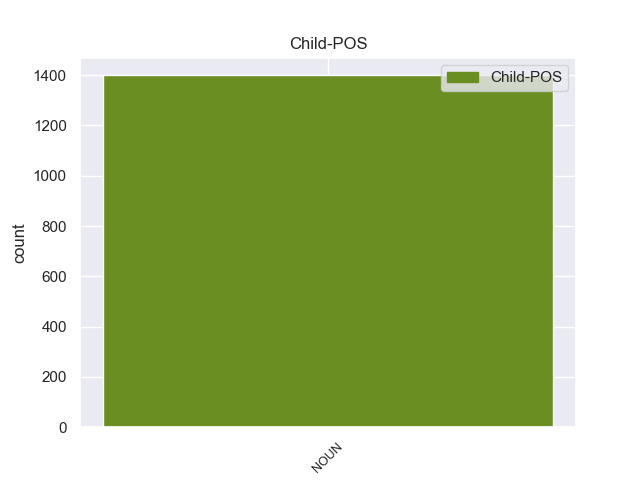

Distribution of features within this leaf



Agreement Rules sorted by frequency.
- When the dependent token is the passive nominal subject(nsubj:pass) of the head token, and the dependent token is NOUN.
1 Durante _ _ _ _ 0 _ _ _
2 il _ _ _ _ 0 _ _ _
3 terremoto _ _ _ _ 0 _ _ _
4 in _ _ _ _ 0 _ _ _
5 Iran _ _ _ _ 0 _ _ _
6 , _ _ _ _ 0 _ _ _
7 sono _ _ _ _ 0 _ _ _
8 morte _ _ _ _ 0 _ _ _
9 moltissime _ _ _ _ 0 _ _ _
10 persone _ _ _ _ 0 _ _ _
11 e _ _ _ _ 0 _ _ _
12 il _ _ _ _ 0 _ _ _
13 centro centro NOUN S Gender=Masc|Number=Sing 23 nsubj:pass 23:nsubj:pass _
14 storico _ _ _ _ 0 _ _ _
15 di _ _ _ _ 0 _ _ _
16 la _ _ _ _ 0 _ _ _
17 città _ _ _ _ 0 _ _ _
18 di _ _ _ _ 0 _ _ _
19 Bam _ _ _ _ 0 _ _ _
20 è _ _ _ _ 0 _ _ _
21 stato _ _ _ _ 0 _ _ _
22 completamente _ _ _ _ 0 _ _ _
23 distrutto distruggere VERB V Gender=Masc|Number=Sing|Tense=Past|VerbForm=Part 0 _ _ _
24 . _ _ _ _ 0 _ _ _
Disagree Examples:
1 Parte parte NOUN S Gender=Fem|Number=Sing 7 nsubj:pass 7:nsubj:pass _
2 di _ _ _ _ 0 _ _ _
3 questo _ _ _ _ 0 _ _ _
4 denaro _ _ _ _ 0 _ _ _
5 sarebbe _ _ _ _ 0 _ _ _
6 stato _ _ _ _ 0 _ _ _
7 utilizzato utilizzare VERB V Gender=Masc|Number=Sing|Tense=Past|VerbForm=Part 0 _ _ _
8 da _ _ _ _ 0 _ _ _
9 Bernard _ _ _ _ 0 _ _ _
10 Tapie _ _ _ _ 0 _ _ _
11 per _ _ _ _ 0 _ _ _
12 " _ _ _ _ 0 _ _ _
13 comperare _ _ _ _ 0 _ _ _
14 " _ _ _ _ 0 _ _ _
15 alcune _ _ _ _ 0 _ _ _
16 partite _ _ _ _ 0 _ _ _
17 di _ _ _ _ 0 _ _ _
18 il _ _ _ _ 0 _ _ _
19 campionato _ _ _ _ 0 _ _ _
20 di _ _ _ _ 0 _ _ _
21 calcio _ _ _ _ 0 _ _ _
22 transalpino _ _ _ _ 0 _ _ _
23 . _ _ _ _ 0 _ _ _
1 il _ _ _ _ 0 _ _ _
2 parco parco NOUN S Gender=Masc|Number=Sing 26 nsubj:pass 26:nsubj:pass _
3 Virunga _ _ _ _ 0 _ _ _
4 , _ _ _ _ 0 _ _ _
5 la _ _ _ _ 0 _ _ _
6 più _ _ _ _ 0 _ _ _
7 antica _ _ _ _ 0 _ _ _
8 riserva _ _ _ _ 0 _ _ _
9 naturale _ _ _ _ 0 _ _ _
10 d' _ _ _ _ 0 _ _ _
11 Africa _ _ _ _ 0 _ _ _
12 - _ _ _ _ 0 _ _ _
13 creata _ _ _ _ 0 _ _ _
14 in _ _ _ _ 0 _ _ _
15 il _ _ _ _ 0 _ _ _
16 1925 _ _ _ _ 0 _ _ _
17 ed _ _ _ _ 0 _ _ _
18 estesa _ _ _ _ 0 _ _ _
19 per _ _ _ _ 0 _ _ _
20 oltre _ _ _ _ 0 _ _ _
21 300 _ _ _ _ 0 _ _ _
22 chilometri _ _ _ _ 0 _ _ _
23 - _ _ _ _ 0 _ _ _
24 è _ _ _ _ 0 _ _ _
25 ora _ _ _ _ 0 _ _ _
26 esposta esporre VERB V Gender=Fem|Number=Sing|Tense=Past|VerbForm=Part 0 _ _ _
27 a _ _ _ _ 0 _ _ _
28 gravi _ _ _ _ 0 _ _ _
29 rischi _ _ _ _ 0 _ _ _
30 di _ _ _ _ 0 _ _ _
31 desertificazione _ _ _ _ 0 _ _ _
32 e _ _ _ _ 0 _ _ _
33 degrado _ _ _ _ 0 _ _ _
34 ambientale _ _ _ _ 0 _ _ _
35 anche _ _ _ _ 0 _ _ _
36 per _ _ _ _ 0 _ _ _
37 i _ _ _ _ 0 _ _ _
38 sistematici _ _ _ _ 0 _ _ _
39 episodi _ _ _ _ 0 _ _ _
40 di _ _ _ _ 0 _ _ _
41 bracconaggio _ _ _ _ 0 _ _ _
42 . _ _ _ _ 0 _ _ _
1 Poco _ _ _ _ 0 _ _ _
2 lontano _ _ _ _ 0 _ _ _
3 sono _ _ _ _ 0 _ _ _
4 quasi _ _ _ _ 0 _ _ _
5 terminati terminare VERB V Gender=Masc|Number=Plur|Tense=Past|VerbForm=Part 0 _ _ _
6 una _ _ _ _ 0 _ _ _
7 trentina trentina NOUN S Gender=Fem|Number=Sing 5 nsubj:pass 5:nsubj:pass _
8 di _ _ _ _ 0 _ _ _
9 palazzi _ _ _ _ 0 _ _ _
10 su _ _ _ _ 0 _ _ _
11 i _ _ _ _ 0 _ _ _
12 confini _ _ _ _ 0 _ _ _
13 di _ _ _ _ 0 _ _ _
14 il _ _ _ _ 0 _ _ _
15 quartiere _ _ _ _ 0 _ _ _
16 di _ _ _ _ 0 _ _ _
17 AlRimal _ _ _ _ 0 _ _ _
18 , _ _ _ _ 0 _ _ _
19 la _ _ _ _ 0 _ _ _
20 zona _ _ _ _ 0 _ _ _
21 residenziale _ _ _ _ 0 _ _ _
22 . _ _ _ _ 0 _ _ _
1 A _ _ _ _ 0 _ _ _
2 tali _ _ _ _ 0 _ _ _
3 consorzi _ _ _ _ 0 _ _ _
4 possono _ _ _ _ 0 _ _ _
5 essere _ _ _ _ 0 _ _ _
6 anche _ _ _ _ 0 _ _ _
7 affidati affidare VERB V Gender=Masc|Number=Plur|Tense=Past|VerbForm=Part 0 _ _ _
8 l' _ _ _ _ 0 _ _ _
9 esecuzione esecuzione NOUN S Gender=Fem|Number=Sing 7 nsubj:pass 7:nsubj:pass SpaceAfter=No
10 , _ _ _ _ 0 _ _ _
11 la _ _ _ _ 0 _ _ _
12 manutenzione _ _ _ _ 0 _ _ _
13 e _ _ _ _ 0 _ _ _
14 l' _ _ _ _ 0 _ _ _
15 esercizio _ _ _ _ 0 _ _ _
16 di _ _ _ _ 0 _ _ _
17 le _ _ _ _ 0 _ _ _
18 altre _ _ _ _ 0 _ _ _
19 opere _ _ _ _ 0 _ _ _
20 d' _ _ _ _ 0 _ _ _
21 interesse _ _ _ _ 0 _ _ _
22 comune _ _ _ _ 0 _ _ _
23 a _ _ _ _ 0 _ _ _
24 più _ _ _ _ 0 _ _ _
25 fondi _ _ _ _ 0 _ _ _
26 o _ _ _ _ 0 _ _ _
27 d' _ _ _ _ 0 _ _ _
28 interesse _ _ _ _ 0 _ _ _
29 particolare _ _ _ _ 0 _ _ _
30 a _ _ _ _ 0 _ _ _
31 uno _ _ _ _ 0 _ _ _
32 di _ _ _ _ 0 _ _ _
33 essi _ _ _ _ 0 _ _ _
34 . _ _ _ _ 0 _ _ _
1 L' _ _ _ _ 0 _ _ _
2 utilizzazione utilizzazione NOUN S Gender=Fem|Number=Sing 28 nsubj:pass 28:nsubj:pass _
3 di _ _ _ _ 0 _ _ _
4 i _ _ _ _ 0 _ _ _
5 terreni _ _ _ _ 0 _ _ _
6 e _ _ _ _ 0 _ _ _
7 l' _ _ _ _ 0 _ _ _
8 eventuale _ _ _ _ 0 _ _ _
9 loro _ _ _ _ 0 _ _ _
10 trasformazione _ _ _ _ 0 _ _ _
11 , _ _ _ _ 0 _ _ _
12 la _ _ _ _ 0 _ _ _
13 qualità _ _ _ _ 0 _ _ _
14 di _ _ _ _ 0 _ _ _
15 le _ _ _ _ 0 _ _ _
16 colture _ _ _ _ 0 _ _ _
17 , _ _ _ _ 0 _ _ _
18 il _ _ _ _ 0 _ _ _
19 governo _ _ _ _ 0 _ _ _
20 di _ _ _ _ 0 _ _ _
21 i _ _ _ _ 0 _ _ _
22 boschi _ _ _ _ 0 _ _ _
23 e _ _ _ _ 0 _ _ _
24 di _ _ _ _ 0 _ _ _
25 i _ _ _ _ 0 _ _ _
26 pascoli _ _ _ _ 0 _ _ _
27 sono _ _ _ _ 0 _ _ _
28 assoggettati assoggettare VERB V Gender=Masc|Number=Plur|Tense=Past|VerbForm=Part 0 _ _ _
29 , _ _ _ _ 0 _ _ _
30 per _ _ _ _ 0 _ _ _
31 effetto _ _ _ _ 0 _ _ _
32 di _ _ _ _ 0 _ _ _
33 il _ _ _ _ 0 _ _ _
34 vincolo _ _ _ _ 0 _ _ _
35 , _ _ _ _ 0 _ _ _
36 a _ _ _ _ 0 _ _ _
37 le _ _ _ _ 0 _ _ _
38 limitazioni _ _ _ _ 0 _ _ _
39 stabilite _ _ _ _ 0 _ _ _
40 da _ _ _ _ 0 _ _ _
41 le _ _ _ _ 0 _ _ _
42 leggi _ _ _ _ 0 _ _ _
43 in _ _ _ _ 0 _ _ _
44 materia _ _ _ _ 0 _ _ _
45 . _ _ _ _ 0 _ _ _